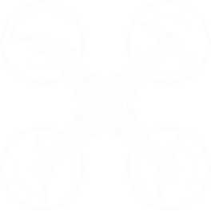
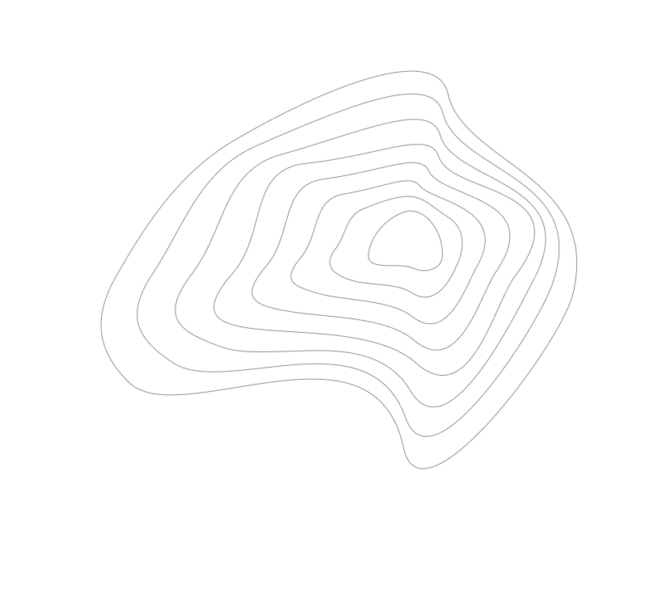

+7861 21791 18
+7861 21791 18
Что у нас нового?
Новости
Опрыскивание растений с беспилотников
Опрыскивание с дронов может проводиться как минимум в двух форматах: “классическом авиационном”, когда химикаты распыляются по всему полю, и “точечном”, совмещенным, например, с предварительным осмотром посевов при помощи мультиспектральных камер.
.png)
Дроны – будущее сельского хозяйства
Новые технологии не обходят стороной и самую консервативную отрасль – сельское хозяйство. Согласно прогнозам международной общественной организации Association for Unmanned Vehicle Systems International, в скором времени агросектор станет крупнейшим потребителем дронов – беспилотных летательных аппаратов (БПЛА).
.png)
Зачем нужны беспилотники в сельском хозяйстве?
Использование дронов в земледелии и в целом в сельском хозяйстве - одно из наиболее перспективных направлений применения этой технологии. БЛА могут быть эффективно использованы для планирования и контроля этапов сельскохозяйственного производства, а также для химической обработки посевов и других растений.
.png)
Создание цифровых карт и контуров полей
Многие руководители агрохозяйств только приблизительно знают площади своих полей, и это негативно влияет на точность расчетов внесения минудобрений и подсчета полученной продукции. Чтобы эффективно управлять сельскохозяйственным предприятием потребуется точное знание посевных площадей.
